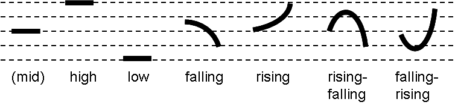

| 1.1 Note On Orthography and Transliteration | 1.3 Phonological Processes and Rules |
| 1.2 Phonemic Inventory | 1.4 Phonotactic Rules |
The phonology of a language essentially refers to its sound system, i.e., its systematic employment of consonants, vowels, and other vocalized phenomena such as pitch, stress (or accent), and tone in order to physically convey the meaningful content of the language itself. The phonological system of Ithkuil is detailed in the sections below.
1.1 NOTE ON ORTHOGRAPHY AND TRANSLITERATION |
The native script used to represent Ithkuil is both alien and complex. It is explained in Chapter 11. As a result of this complexity, a system of romanization is employed throughout this grammar to allow the reader to recognize the general phonetic structure of Ithkuil words. Due to the inadequacies of the Roman alphabet in transliterating some of the phonemes (meaningful sounds) in Ithkuil, various diacritics are necessary for a phonemic Romanization system. Additionally, there are two digraphs, dh and xh, which represent single sounds.
| 1.2 PHONEMIC INVENTORY |
Ithkuil has 45 consonants and 13 vowels. These phonemes are illustrated by place and manner of articulation in Table No. 1 below using a special romanized orthography.
Tables 1(a) and 1(b): Phonemic Inventory
Table 1(a): Consonantal Inventory
PLOSIVES |
AFFRICATES |
Fricatives |
Nasals |
Taps/ Trills |
Liquids |
Approximants |
||||||||
plain |
aspirated |
ejective |
plain |
aspirated |
ejective |
|||||||||
un- voiced |
+voice |
un- |
un- voiced |
un- voiced |
+voice |
un- voiced |
un- voiced |
un- voiced |
+voice |
+voice |
+voice |
+voice |
+voice |
|
| BILABIAL | p |
b |
ph |
p’ |
_ |
_ |
_ |
_ |
_ |
_ |
m |
_ |
_ |
_ |
| LABIO-VELAR | _ |
_ |
_ |
_ |
_ |
_ |
_ |
_ |
_ |
_ |
_ |
_ |
_ |
w |
| LABIO-DENTAL | _ |
_ |
_ |
_ |
_ |
_ |
_ |
_ |
f |
v |
_ |
_ |
_ |
_ |
| DENTAL | t |
d |
th |
t’ |
_ |
_ |
_ |
_ |
ţ |
dh |
n |
_ |
_ |
_ |
| ALVEOLAR | _ |
_ |
_ |
_ |
c |
ż |
ch |
c’ |
s |
z |
_ |
_ |
_ |
_ |
| ALVEOLAR-RETROFLEX | _ |
_ |
_ |
_ |
_ |
_ |
_ |
_ |
_ |
_ |
_ |
r |
_ |
_ |
| POST-ALVEOLAR | _ |
_ |
_ |
_ |
č |
j |
čh |
č’ |
š |
ž |
_ |
_ |
_ |
_ |
| PALATAL | _ |
_ |
_ |
_ |
_ |
_ |
_ |
_ |
ç |
_ |
_ |
_ |
_ |
y |
| VELAR | k |
g |
kh |
k’ |
_ |
_ |
_ |
_ |
x |
_ |
ň |
_ |
_ |
_ |
| UVULAR | q |
_ |
qh |
q’ |
_ |
_ |
_ |
_ |
xh |
_ |
_ |
_ |
_ |
ř |
| GLOTTAL | ’ |
_ |
_ |
_ |
_ |
_ |
_ |
_ |
h |
_ |
_ |
_ |
_ |
_ |
| LATERAL | _ |
_ |
_ |
_ |
_ |
_ |
_ |
_ |
ļ |
_ |
_ |
_ |
l |
_ |
Table 1(b): Vocalic Inventory
_ |
FRONT |
CENTRAL |
BACK |
|||
_ |
unrounded |
rounded |
unrounded |
rounded |
unrounded |
rounded |
High |
î |
(ü) |
_ |
ü |
_ |
û |
Mid-High |
i |
_ |
_ |
_ |
_ |
u |
Mid |
ê |
ö |
ë |
_ |
_ |
ô |
Mid-Low |
e |
_ |
_ |
_ |
o |
|
Low |
_ |
_ |
a |
_ |
â |
_ |
The following are approximate descriptions of the consonantal sounds of Ithkuil. In addition to these descriptions, the corresponding symbol of the International Phonetic Alphabet (IPA) is provided in brackets, as well as their X-SAMPA equivalents for those readers who may be familiar with these phonetic representation systems.
b |
As in English. A voiced unaspirated bilabial plosive. IPA and X-SAMPA [b]. |
c |
As in English bits. A voiceless unaspirated lamino-alveolar affricate. IPA [ts]. X-SAMPA [ t_s ]. |
č |
As in English chin but with neither the lip-rounding nor the aspiration (accompanying puff of air) that characterizes this sound in English. A voiceless unaspirated lamino-postalveolar dorso-palatal non-labialized sibilant affricate; IPA [ |
ç |
Like the initial sound in English human, huge, hue, or the sound in German ich. A voiceless dorso-palatal non-grooved (slit) fricative; IPA [ç]. X-SAMPA [C]. |
d |
Similar to English, but made with the tip of the tongue against the back of the upper teeth, not the alveolar ridge (the gum ridge behind the upper teeth) as in English. An voiced unaspirated apico-dental plosive; IPA [ |
dh |
As in English this, bathe, weather. A voiced apico-interdental fricative; IPA [ð]. X-SAMPA [D]. |
f |
As in English. A voiceless labio-dental fricative; IPA and X-SAMPA [f]. |
g |
Always as in English gag; never as in ginger. A voiced unaspirated dorso-velar plosive; IPA and X-SAMPA [g]. |
h |
As in English hall. Note that, unlike English, this sound can occur at the end of a syllable in Ithkuil. A voiceless bi-glottal fricative; IPA and X-SAMPA [h]. |
j |
As in English judge but without the lip-rounding that accompanies the English sound. A voiced unaspirated non-labialized lamino-postalveolar dorso-palatal affricate; IPA [ |
k |
Similar to English k but without aspiration. Like the k-sound of the Romance languages, e.g., Spanish or Italian casa. A voiceless unaspirated dorso-velar plosive; IPA and X-SAMPA [k]. |
l |
The “light” l-sound of the Romance languages, or as in British English leader; not the “dark” (velarized) l-sound of American English lull. A voiced apico-dental dorso-bilateral liquid continuant; IPA and X-SAMPA [l]. |
ļ |
No English equivalent. The voiceless dorso-bilateral fricative as found in Welsh llan. Can best be approximated by putting the tongue in position as if to say an l-sound, and while holding the position, make a forceful h-sound instead; IPA [ |
m |
As in English. A voiced bilabial nasal continuant obstruent; IPA and X-SAMPA [m]. |
n |
Similar to English, but made with the tip of the tongue on the back of the upper teeth as in the Romance languages, not the alveolar ridge as in English. A voiced apico-dental nasal continuant obstruent; IPA [ |
ň |
The English ng-sound as in song or ringer; NEVER as in finger. A voiced dorso-velar nasal continuant obstruent;. IPA [ŋ]. X-SAMPA [N]. |
p |
Similar to English, but without aspiration. As in the Romance languages. A voiceless unaspirated bilabial plosive; IPA and X-SAMPA [p]. |
q |
No English equivalent. The voiceless dorso-uvular unaspirated plosive found in Arabic, Inuit and many American Indian and Caucasian languages. Similar to an unaspirated k-sound but made by pressing the tongue against the uvula (the little “punching bag” hanging at the back of the palate) as opposed to the soft palate. IPA and X-SAMPA [q]. |
r |
This sound is a single flap of the tongue tip as in Spanish caro or pero. When geminated (doubled) it becomes a trill as in Spanish carro or perro. A voiced apico-alveolar retroflex flap/trill; IPA [ |
ř |
No English equivalent. Like the throaty or “gargled” r-sound found in colloquial French and German. A voiced dorso-uvular approximant (non-trilled); IPA [ |
s |
As in English sister. A voiceless lamino-alveolar grooved sibilant fricative; IPA and X-SAMPA [s]. |
š |
As in English shoeshine but without the lip-rounding of the English sound. A voiceless non-labialized lamino-postalveolar dorso-palatal grooved sibilant fricative; IPA [ |
t |
Similar to English but without aspiration and with the tongue-tip against the back of the upper teeth, not against the alveolar ridge. As in the Romance languages. A voiceless unaspirated apico-dental plosive; IPA [ |
ţ |
As in English thin, bath. A voiceless apico-interdental fricative; IPA [θ]. X-SAMPA [T]. |
v |
As in English. A voiced labio-dental fricative; IPA and X-SAMPA [v]. |
w |
As in English well, worry. A voiced labio-velar (i.e., labialized dorso-velar) glide (or approximant); IPA and X-SAMPA [w]. |
x |
No English equivalent. The smooth voiceless dorso-velar fricative found in Russian (spelled x in Cyrillic) and in Latin American (but not Castilian) Spanish j. Can be approximated by putting one's tongue in position as if to pronounce a k-sound, and while holding the tongue in this position, breathing an h-sound instead. IPA and X-SAMPA [x]. |
xh |
No English equivalent. The rough voiceless dorso-uvular fricative (or trill) found in German ach. Can be approximated by means of a dry gargle without vocal chord vibration. IPA [χ]. X-SAMPA [X]. |
y |
As in English yet, yam. A voiced dorso-palatal glide (or approximant); IPA and X-SAMPA [ j ]. |
z |
As in English zoo, wizard. A voiced lamino-alveolar grooved fricative; IPA and X-SAMPA [z]. |
ż |
Like an English d+z sound, as in roads, adze. A voiced lamino-alveolar affricate; IPA [dz]. X-SAMPA [d_z]. |
ž |
The voiced counterpart of š above. Similar to the sound in English pleasure or leisure, but without lip-rounding. A voiced lamino-alveolar dorso-palatal grooved sibilant fricative; IPA [ |
’ |
This sound is the glottal stop heard between the two vowels in English oh-oh or as the sound heard in the word fattening as pronounced by most American English speakers. This sound is very common in other languages such as Hawaiian, Arabic, Hebrew, etc. A voiceless bi-glottal stop; IPA [ |
1.2.1.1 Aspirated Consonants: The consonants p, t, k, q, c and č are all unaspirated, i.e., without the accompanying puff of air characteristic of English voiceless stops and affricates. In Ithkuil each of these has an aspirated counterpart, pronounced like the unaspirated version but with a distinct expulsion of air, more so than in English. These aspirated counterparts are written with a following superscript h; thus: ph, th, kh, qh, ch and čh.
1.2.1.2 Ejective Consonants: The same six consonants immediately above also have ejective counterparts, which do not exist in any major Western language, but are found in languages such as Amharic, Georgian, most of the Caucasian languages, and many American Indian languages. Ejectives (also called glottalized consonants) are consonants accompanied by simultaneous closure and sudden release of the glottis (vocal chords), which gives the sound a distinct “popped” or explosive quality. Ejectives are indicated by an apostrophe following the consonant, thus: p’, t’, k’, q’, c’ and č’.
1.2.1.3 Syllabic consonants. The consonants, l, m, n, ň, and r can be pronounced as full syllables in absence of a vowel. The phenomenon of syllabic consonants is fairly common and occurs in colloquial English expressions such as ‘hmm’ (as when pondering a thought), ‘mm-hmm’ (an expression of approval or agreement), as well as with the consonants n and l as in the second syllable of words like button and little. In Ithkuil, these five syllabic consonants can appear as word-initial syllables preceding a consonant as in ntal. However, they also occur in special geminate (i.e., doubled) clusters where the second “half” of the geminated cluster is pronounced as a separate syllable. These special dyssyllabic geminates are indicated by writing a hyphen between the two syllabic “halves,” e.g., hom-m, il-lui, tiň-ňax. Syllabic consonants count as full syllables for purposes of stress rules (see Sec. 1.3.3).
There are thirteen vowel phonemes, all of which are pure sounds, not glided into diphthongs as in English.
a |
A low unrounded central vowel as in Spanish or Italian. IPA or X-SAMPA [a]. |
â |
A low unrounded back vowel as in Western U.S. all, or a conservative French pronunciation of pâte. IPA [ɑ]; |
e |
The mid-low unrounded front vowel of English bet, Italian letto, or French être. IPA [ε] or X-SAMPA [E]. When followed by a vowel other than u, it is pronounced like the vowel ê immediately below, only shorter. |
ê |
The mid unrounded front vowel of Spanish este or Italian cadere or French déjà, lengthened. IPA or X-SAMPA [e:] |
i |
The mid-high lax unrounded front vowel as in English sit, or German sitzen. IPA [I] or X-SAMPA [I]. At the end of a word, or when followed by a vowel other than u, it is pronounced like the vowel î immediately below, only shorter. |
î |
the high tense rounded vowel of Spanish or Italian libro, or Fench litre, lengthened. IPA or X-SAMPA [i:] |
o |
The mid rounded back vowel of English short or Italian otto. IPA [ |
ô |
The mid-low rounded back vowel in Spanish or Italian cosa, lengthened. IPA or X-SAMPA [o:] |
u |
The mid-high lax rounded back vowel of English put or look or German putsch. IPA [ |
û |
the high tense rounded back vowel of Spanish or Italian puta or crudo, lengthened. IPA or X-SAMPA [u:] |
ë |
The mid unrounded central vowel in American English cut or nut, IPA [ə] or X-SAMPA [@]. |
ö |
This vowel may be pronounced either of two ways: (1) as the mid-low rounded front vowel of French feu, IPA [ø] or X-SAMPA [2]; or (2) as the mid rounded front vowel of French neuf, IPA [œ] or X-SAMPA [9]. |
ü |
A high central rounded vowel, as found in Norwegian hus or the Highland Scottish pronunciation of English book or good; IPA [ |
1.2.2.1 Epenthetic Vowel Following a Glottal Stop. In Ithkuil words where a glottal stop (spelled ’) is followed by a consonant (e.g., as in the words ka’tal or morui’ss), the glottal stop is usually followed by a very briefly pronounced vowel sound before the following consonant is pronounced. This vowel may be pronounced in either of two ways, whichever is easier for the speaker. The first is as the high central unrounded vowel of Russian быть, IPA [ ] or X-SAMPA [1]. The second way is to pronounce it as the high back unrounded vowel found in Turkish (spelled with an undotted i), IPA [
] or X-SAMPA [1]. The second way is to pronounce it as the high back unrounded vowel found in Turkish (spelled with an undotted i), IPA [ ] or X-SAMPA [M]. Both of these vowels are extremely short in duration and may even be de-voiced if the following consonant is voiceless.
] or X-SAMPA [M]. Both of these vowels are extremely short in duration and may even be de-voiced if the following consonant is voiceless.
An Ithkuil syllable may contain one diphthong (a combination of two vowels pronounced together as one syllable). All Ithkuil diphthongs are “falling” diphthongs, i.e., the first vowel of the diphthong receives the primary articulation while the second becomes semi-vocalic (sometimes referred to as semi-consonantal or an “off-glide”). There are 12 diphthongs in Ithkuil, described as follows:
ai |
Pronounced as in Spanish or Italian; like English i in white or ice. |
ei |
As in Spanish or Italian; like English ai in rain or ei in rein. |
ëi |
No standard English equivalent; a combination of the vowel sound in American English rut + an English y-sound. Somewhat like a rural British dialectal pronunciation of the i in ice. |
oi |
As in Spanish or Italian; as in English boy or voice. |
öi |
No English Equivalent. A combination of the Ithkuil vowel ö plus an English y-sound. Much like the French word oeil. |
ui |
A combination of the Ithkuil vowel u [ |
au |
As in Spanish or Italian; like English ou in loud or ow in cow. |
eu |
As in Spanish or Italian; no English equivalent. A combination of the Ithkuil vowel e + an English w-sound. |
ëu |
No standard English equivalent; a combination of the vowel sound in American English rut + an English w-sound. Somewhat like a rural British dialectal pronunciation of the word oh! |
iu |
No English equivalent; a combination of the Ithkuil vowel i (IPA /I/) + an English w-sound. May also be pronounced as the high front unrounded vowel /i/ + an English w-sound, as in Portuguese partiu. |
ou |
Like the o + w-glide of English road or mode. Also as in Brazilian Portuguese roupa. |
öu |
No English Equivalent. A combination of the Ithkuil vowel ö plus an English w-sound. Somewhat like an exaggerated upper class British pronunciation of the word oh! |
All other combinations of vowels are dissyllabic, i.e., are pronounced as two separate syllables. Care should be taken to avoid collapsing the many two-vowel combinations beginning with u- and i- into “rising” diphthongs beginning with a w-sound or y-sound. This is especially important when the second vowel of these combinations receives the syllabic stress.
1.2.3.1 Separation of Diphthongs into Separate Syllables: When one of the above twelve diphthongs represent the Slot VIII Vc case infix (see Section 2.1.1 for an explanation), the diphthong may optionally be separated into two separate syllables in words with antepenultimate or preantepenultimate stress (see Section 1.3.3 below), in order to provide a sufficient number of syllables in the word for the stress rules to be applied. When diphthongs are broken up into separate syllables for this purpose, the second character of the diphthong (i.e., either -i or -u) carries a circumflex accent above it to show the syllabification. In such instances, this circumflex does not indicate a long vowel, but merely the separation of the syllables.
Dissyllabic vowel conjuncts, wherever they might be confused with a diphthong, are written with a grave accent ( ` ) over the second vowel to indicate it is a separate syllable (unless this second vowel is, in fact, the stressed syllable – see Section 1.3.3 below for rules on indicating stress). For example, diphthong au is distingished from dissyllabic conjunct aù.
Allophonic distinctions are the phonetic variances in the pronunciation of a particular phoneme depending on the phonetic environment in which that phoneme occurs. These variances, known as allophones, while audible to a trained linguist, are often indistinguishable to lay native speakers of a given language, in that these allophonic variances do not change the meaning of a word and thus play no functional role in the language. As an example, compare the two t-sounds in the English words top and stop. The former is aspirated (i.e., accompanied by a distinct puff of air), while the latter is unaspirated, giving the two sounds a different phonetic quality. However, because consonant aspiration does not function phonemically in English, the difference in the two t-sounds is unnoticeable to most native speakers of English, even though it would be highly noticeable to speakers of languages where consonant aspiration is phonemically relevant (e.g., Hindi and many other Indic languages).
Although such allophonic distinctions are arbitrary within a given language, they are not random; rather, their patterns are completely regular and predictable for any given language (as is true for consonant aspiration in English). Failure to follow the rules for allophonic distinctions when learning a foreign language will result in the speaker having a noticeable “foreign accent” to native speakers of the language (as do most French, Italians, and Spanish-speakers when trying to pronounce English “top” without aspirating the initial t-sound, due to the lack of consonant aspiration in Romance languages.)
1.2.5.1 Consonantal Allophones. The significant allophonic distinctions for Ithkuil consonants are as follows:
dy |
This consonant cluster may be pronounced either as it is spelled, or as the voiced dorso-palatal unaspirated plosive found in Hungarian and Czech where it is spelled gy and d´ respectively. Sort of like a g+y sound as in English big year pronounced rapidly, with the g-sound pronounced with the tongue against the hard palate as opposed to the soft palate. IPA [ |
hh |
The geminated version of Ithkuil h is pronounced in either of two ways: (1) as a “bi-dental” fricative, in that the jaw is completely closed and the upper and lower teeth are in near-contact along their entire length; the resulting sound is somewhat similar in timbre to both a voiceless interdental fricative (as in English thin) as well as the English f-sound, however there is absolutely no contact by the tongue with the teeth or gums when pronouncing this sound; no IPA equivalent; or (2) as the voiceless pharyngeal fricative found in Arabic (spelled
ح)and in various Northwest and Northeast Caucasian languages. This second allophone should not be employed if the resulting pharyngealization distorts the timbre of the adjacent vowels to the extent that their place of articulation changes (e.g., the vowel û being made to sound like ô). |
ly |
This consonant cluster may be pronounced either as it is spelled, or as the voiced palatal lateral liquid continuant found in Castillian Spanish calle, Portuguese olhar, or Italian egli. For English speakers, this can best be approximated by placing the tongue in the position to say the y in yes, and while keeping the tongue in that position flat against the hard palate, pronouncing an l-sound instead without touching the tip of the tongue to the alveolar ridge behind the front teeth. IPA [ |
ny |
This consonant cluster may be pronounced either as it is spelled, or as the voiced palatal nasal found in Spanish año, Italian agnello, Portuguese caminho, or French champagne. For English speakers, this can best be approximated by placing the tongue in the position to say the y in yes, and while keeping the tongue in that position flat against the hard palate, pronouncing an n-sound instead without touching the tip of the tongue to the alveolar ridge behind the front teeth. IPA [ |
ř |
In normal speech, this phoneme is pronounced as a voiced dorso-uvular approximant (non-trilled) continuant, similar to the throaty r-sound found in colloquial French and German, IPA [ |
řx |
The combination of ř before x causes the x to be pronounced as a voicelss uvular fricative, as in German Bach or the Castilian pronunciation of Spanish j. |
ty |
This consonant cluster may be pronounced either as it is spelled, or as a voiceless unaspirated dorso-palatal plosive, the unvoiced counterpart to dy above. Like a k-sound but unaspirated (i.e., without any accompanying puff of air) and produced farther forward in the mouth by pressing the tongue to the hard palate, not the soft palate as with English k. The result should sound somewhat like a k+y as in backyard when spoken rapidly. IPA and X-SAMPA [c]. |
bm, dn, km, kn, pm, tn |
|
When in word-initial position, the first consonant of these conjuncts is pronounced with nasal rather than oral release. To achieve this, place the tongue and/or lips in position to pronounce the first consonant, initiate the airstream from the lungs to pronounce it, but instead of releasing the sound, and without moving the tongue or lips, pronounce the second nasal consonant instead. |
|
|
|
Each of these consonant conjuncts, when word-initial, or syllable-initial following another consonant, are not pronounced as separate consonants, but rather as unvoiced counterparts to the liquid or nasal consonant that forms the second member of the conjunct. To approximate these sounds, place the mouth in the position to pronounce an Ithkuil l, m, n, ň, r, or w, and without moving the tongue or lips, breath a clear h-sound instead. |
|
’ |
As previously described in Sec. 1.2.2.1, in Ithkuil words where a glottal stop is followed by a consonant (e.g., ka’tal or morui’ss), the glottal stop is usually followed by a very briefly pronounced epenthetic vowel sound before the following consonant is pronounced. This vowel may be pronounced in either of two ways, whichever is easier for the speaker. The first is as the high central unrounded vowel of Russian быть, IPA [ |
1.2.5.2 Vocalic Allophones. As previously stated in Section 1.2.2, the Ithkuil vowels i and u have two different pronunciations. Specifically, they are pronounced as the vowels in American English sit and put respectively if they appear by themselves, not adjacent to another vowel or not as part of a diphthong. However, when part of a dissyllabic vowel conjunct, their pronunciation is as follows:
For disyllabic vowel conjuncts beginning with the vowel i- (e.g., ia, ie, io, iù, etc.), the initial i- is pronounced as the high unrounded front vowel in Spanish or Italian libro, or German siegen. IPA or X-SAMPA [i].
For disyllabic vowel conjuncts where the second member is i, (e.g., aì, uì, öì, etc.), the i may be pronounced either as the lax vowel in English sit and German sitzen (IPA [I], or as the high unrounded front vowel in Spanish or Italian libro, or German siegen. IPA or X-SAMPA [i].
For disyllabic vowel conjuncts beginning with the vowel u- (e.g., ua, ue, uo, uì, etc.), the initial u- is pronounced as the high rounded back vowel in Spanish or Italian puta or crudo. IPA or X-SAMPA [u].
For disyllabic vowel conjuncts where the second member is u, (e.g., aù, iù, öù, etc.), the u may be pronounced either as the lax vowel in English put and German putsch (IPA [
] or X-SAMPA [U], or as the high rounded back vowel in Spanish or Italian puta or crudo. IPA or X-SAMPA [u].
In word-final position the vowel i, when not part of a diphthong, is pronounced as the high unrounded front vowel in Spanish or Italian libro, or German siegen. IPA or X-SAMPA [i]. Similarly, the vowel u in word-final position and not part of a diphthong, is pronounced as the high rounded back vowel in Spanish or Italian puta or crudo. IPA or X-SAMPA [u].
Additional vocalic allophones:
For disyllabic vowel conjuncts beginning with the vowel e- and the second vowel is other than ì or ù (i.e., ea, eo, eö), the initial e- is pronounced as the mid unrounded front vowel of Spanish este or Italian cadere or French déjà; IPA or X-SAMPA [e].
For disyllabic vowel conjuncts beginning with the vowel o- and the second vowel is other than ì or ù (i.e., oa, oe), the initial o- is pronounced as the mid-low rounded back vowel in Spanish or Italian cosa; IPA or X-SAMPA [o].
| 1.3 PHONOLOGICAL PROCESSES AND RULES |
Besides the actual inventory of consonant and vowels, all languages have phonological processes which affect how those consonants or vowels are combined and phonetically articulated. Through these phonological processes, the possible number of word-forming syllables in the language is expanded. Ithkuil productively utilizes consonantal gemination, shifts in syllabic stress, and tone (pitch intonation) to achieve these ends.
Gemination refers to the audible “doubling” in length of a particular sound, usually in reference to consonants. While gemination does not occur in English on true phonological grounds, it does occur on morpho-phonological grounds, as seen in the difference in pronunciation of the phrase ‘a natural’ versus ‘unnatural.’ There are many languages, however, where phonologically-based gemination is an intrinsic component of the phonology (e.g., Italian, Japanese, Finnish).
In Ithkuil, most consonants can be geminated. Also noteworthy is that gemination of certain consonants is allowed in both word-initial and word-final position. The following are the specific rules for consonant gemination:
1.3.1.1 Intervocalic Gemination. All consonants are capable of intervocalic gemination (i.e., when between two vowels) except for y, w and the glottal stop ’.
1.3.1.2 Word-Initial and Word-Final Gemination. The following consonants, in addition to being capable of intervocalic gemination, are also capable of being geminated in both word-initial and word-final position: c, ç, č, j, l, m, n, ň, r, ř, s, š, z, ż and ž.
1.3.1.3 Pronunciation of Geminated Consonants. Consonants which are continuants (i.e., able to be sounded for an indefinite duration), specifically ç, dh, f, l, m, n, r, ř, s, š, ţ, v, x, z, and ž, are simply pronounced for twice as long in duration when geminated. Geminated r is pronounced as a rapid apico-alveolar trill like rr in Spanish or Italian.
The non-aspirated plosive consonants b, d, g, k, p, q and t, when geminated, are momentarily held, then released, much like the two d-sounds in the English phrase bad dog when spoken rapidly. For their aspirated or ejective counterparts, the aspiration or ejectivization occurs upon release.
The pronunciation of affricates (c, č, j, and ż) when geminated depends on whether or not they are intervocalic (between two vowels) versus word-initial or word-final position. If intervocalic, they are pronounced by momentarily holding the initial stop (plosive) component of the affricate before releasing it into the fricative or sibilant portion, e.g., čč is pronounced as [ttš]. For their aspirated or ejective counterparts, the aspiration or ejectivization occurs upon release into the fricative portion of the affricate. When in word-initial or word-final position, geminated pronunciation is achieved by simply lengthening the sibilant continuant portion of the affricate (i.e., the second sound of each affricate). Thus, čč in word-initial or word-final position is pronounced as [tšš].
1.3.1.4 Romanized Orthography of Geminates. Consonants written as single characters are simply written double when geminated, e.g., bb, čč, dd, nn, šš. Aspirates and ejectives indicate the following superscript-h or apostrophe diacritics only after the second character, e.g., čč’, tth. The two digraphs dh and xh are written ddh and xxh when geminated.
Ithkuil is a tone language like Chinese, Vietnamese, and other Southeast Asian languages as well as most of the sub-Saharan African languages and some American Indian languages. This means that tone of voice is used to convey grammatical information, unlike Western languages which use tone and pitch changes “supra-segmentally” to mark various morpho-semantic features. For example, in English rising intonation of the voice signals a question, while other specific pitch contours signify emphasis, disgust, irony, and other attitudes. Ithkuil marks such features morphologically, i.e., within the words themselves (such as with affixes or variances in mood categories).
There are seven tones used in Ithkuil, one of which, mid tone, is considered to be morpho-phonologically neutral. The other six tones are low, high, falling, rising, rising-falling and falling-rising, and are considered functionally significant. Each word carries one functionally significant tone, pronounced beginning with the stressed syllable and continuously carried through any following syllables until the end of the word. Unstressed syllables prior to the stressed syllable have neutral mid tone. Therefore, the function of mid tone is solely to indicate the start of a new word since any preceding word must end in a tone other than mid. Like natural tone languages, the tones do not correspond to any exact pitch, but are relative for each individual speaker and utterance. The relative pitch of the tones is illustrated below:

1.3.2.1 Indicating Tone in the Romanized Transliteration. The six significant tones are indicated in the Romanized transliteration by a diacritic mark placed immediately before the first letter of the word, as follows:
Stress normally falls on the penultimate (next-to-last) syllable but can shift to either the ultimate (last) syllable of a word, to the antepenultimate (third-from-last) syllable, and occasionally to the preantepenultimate (fourth-from-last) syllable, as determined by morphological (grammatical) considerations.
When transliterating Ithkuil into Roman characters, the number of vowels in Ithkuil requires the use of diacritics due to the limited number of Roman vowel characters. As a result, the orthographic representation of stress using the system of romanization becomes complicated. It is explained as follows:
| 1) | All monosyllabic words are unmarked for stress.
|
| 2) | The grave accent ( ` ) designates an unstressed syllable when stress would otherwise be misinterpreted, e.g., in distinguishing monosyllabic diphthongs such as au and ei from dissyllabic vowel conjuncts aù and eì.
|
| 3) | Penultimate stress. Polysyllabic words having penultimate stress are unmarked for stress, except for those containing the dissyllabic phonemes ì or ù as the penultimate syllable, which, if stressed, take an acute accent, e.g., the word iskoùt (stress on the o), if shifting to ultimate stress, becomes iskoút (stress on the u).
|
| 4) | Ultimate stress. Polysyllabic words which have ultimate stress indicate this in one of the following ways: |
|
|
| 5) | Antepenultimate stress. To show antepenultimate stress (third syllable from the end): |
|
|
| 6) | Preantepenultimate stress. To show preantepenultimate stress (i.e., fourth syllable from the end) apply the same rules as for antepenultimate stress above, but to the preantepenultimate syllable. See Section 1.2.3.1 on the optional separation of diphthongs into separate syllables to increase the number of syllables for purposes of applying preantepenultimate stress. |
NOTE: Monosyllabic words in Ithkuil are to be interpreted grammatically as having the equivalent of penultimate stress. When necessary to gramatically indicate the equivalent ultimate or antepenultimate stress on a monosyllabic word, extra syllables (the vowel -a-) are added to the word in order to allow the necessary ultimate or antepenultimate syllable to be stressed, e.g., kust → kustá, kust → ákusta.
| 1.4 PHONOTACTIC RULES |
In addition to phonological processes such as gemination, stress-shifting, and tone, all languages employ their own individual and arbitrary rules as to what combinations of consonants and vowels are permissible in a syllable or word. This concept is called phonotaxis and such rules are known as phonotactical rules. These rules, peculiar to each language, explain, for example, why sprelch could be a hypothetical word in English, while znatk could not be, even though znatk is as easily pronounced by a linguist as sprelch. Rules governing syllable structure, diphthong formation, and overall phonetic euphony are all part of phonotaxis
Equally important are the optional rules each language employs to achieve euphony and greater ease of pronunciation, known as phonaesthetics or phonaesthetic rules. Together, phonotaxis and phonaesthetics are greatly responsible for the phonetic “character” or subjective “sound” of a given language. The phonotactic and phonaesthetic rules for Ithkuil are described in the sections below.
The permissible syllable structure depends on whether the syllable forms a monosyllabic word, is a word-initial syllable, a word-final syllable, or is word-medial (i.e., between two other syllables). These structures are shown in Table 2 below, where (C) represents an optional consonant and V represents a mandatory vowel or diphthong.
Table 2: Syllabic Structure
Syllable Type |
Structure |
Examples |
| Consonantal Word | C(C)(C) where final consonant is a nasal, liquid, or voiceless fricative continuant |
s, h, ll, mm, pçç |
| Monosyllabic | (C)(C)(C)V(C)(C)(C) |
a, ui, öt, isk, du, tuil, kleb, tlips, pskarn, xxoršt |
| Word-initial | (C)(C)(C)V(C)- or l, m, n, ň |
uran, tamin, uisá, prine, klâtma, kstollap, ltas, mpeisku |
| Word-medial | -(C)(C)V(C)(C)- or l, m, n, ň |
kialùn, ruentik, isteixlom, okspûtkai, hen-nau |
| Word-final | -(C)(C)V(C)(C)(C)- or l, m, n, ň |
lua, entoi, tial, eifkés, poxšurn, erpsalks, ön-n |
The following rules apply:
All the vowels, diphthongs, and dissyllabic vowel conjuncts previously mentioned can occur in any syllable, however, the maximum number of dissyllabic vowels which can occur immediately next to each other is two. If one of the two syllables is a diphthong, the diphthong must be the second syllable. Any syllable immediately following a diphthong must begin with at least one consonant. Trisyllabic vowel conjuncts (or more) are not permitted. Thus, words such as dea or aitua or ruai are permissible, but words such as oia, tuoa, auem, and laúio are not.
 |
For those who would like a copy of the Ithkuil Grammar And while you’re at it, you can check out the novel I co- (It’s a political thriller/science fiction story that explores the |
|
©2004-2011 par John Quijada. Vous pouvez copier ou extraire n'importe quelle partie des contenus de ce site web pour une utilisation privée, individuelle ou personnelle, qui est par nature non-commerciale et non pour des objectifs de profits. Autremement, vous pouvez copier ou extraire de brèves parts des contenus de ce site web dans des articles, papiers, pages webs, publiées, accessibles sur le web, ou distribué commercialement; pour des objectifs de révision, de commentaire, ou d'analyse; à condition que vous en donniez la pleine attribution à l'auteur de ce site web.